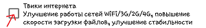

Здравствуйте! Спасибо за установку бесплатной версии программы System
Tweaker!
Данная
версия имеет ограниченный функционал, все остальные и главные фишки
программы присутствуют в PRO версии программы, такие как:
1)
"Ускорение в один клик"
2)
Исправление чтения\записи на карту памяти (Android 4.4-7.0)
3)
Смена DPI
4)
Управление ядром (изменение частоты, governor-а, I/O sheduler-а),
применение твиков ядра, включение специфичных функций
, применение твиков I/O
5)
Возможность применение твика гугл сервисов, применение которого позволит
снизить использование батареи сервисами Google
6)
Возможность включения OOM Killer
7)
Возможность смены TCP режима
8)
Entropy Generator
9)
Применение твиков GPS, которые позволяют увеличить скорость поиска
спутников, увеличить их количество
10) Твики для Android 7.X
11)
Советы по улучшению энергосбережения (инструкция в текстовом виде)
12)
Советы по улучшению производительности (инструкция в текстовом
виде)
13)
Разблокировка FPS
14)
Игровой режим
15)
Улучшатель звука
16)
Твик повышения стабильности 3G соединения путем сжатия
17)
Твик отключения лимита памяти и уведомления о нехватке памяти при установке приложений из Google Play
18)
Dynamic Battery Saving (DynBS)
Приобрести
PRO версию программы
Также, видимо,
Вы в первый раз запускаете эту программу. Нам необходимо рассказать Вам
о том, как использовать программу, а также сообщить еще пару мелочей.
При следующих запусках программы такого диалога не будет!
Как использовать программу:
Чтобы
применить твик, выберите нужный, нажмите на него, подождите в течении
2-5 секунд. При этом имейте терпение, не нажимайте много раз по разным
чекбоксам, иначе программа может зависнуть.
Применяйте
твики с определенной паузой, т.е если Вы выбрали твик, перед
применением другого дождитесь уведомления "Твик применен".
И
это все! Ура! Чтобы отключить твик, просто снимите с него "галочку".
Учтите,
что перед
удалением\переустановкой программы отключите ненужные Вам твики, так
как если их не отключить, то после удаления программы они останутся в
системе.

Важное уведомление об использовании программы:
Также,
при нажатии на кнопку "Понятно" вы признаете, что после открытия
приложения Вы прочитали лиценионное соглашение и автоматически
согласились с ним!